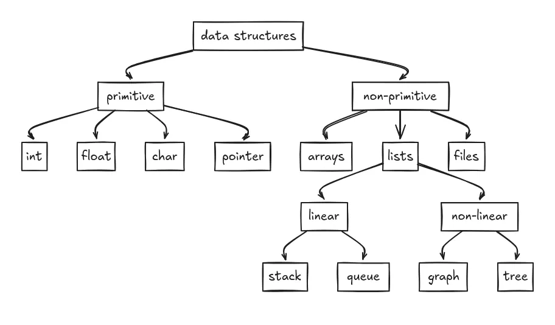
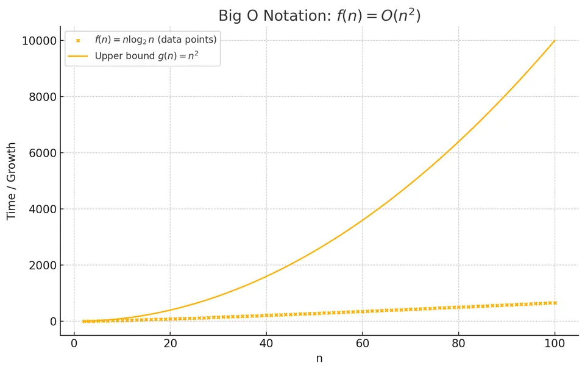
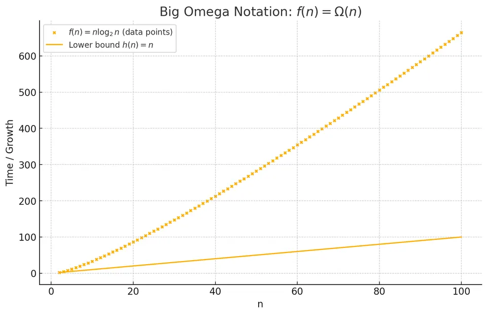
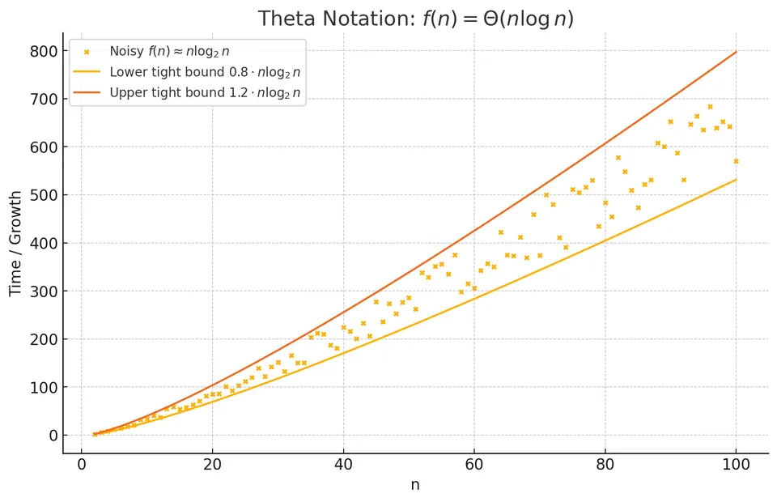
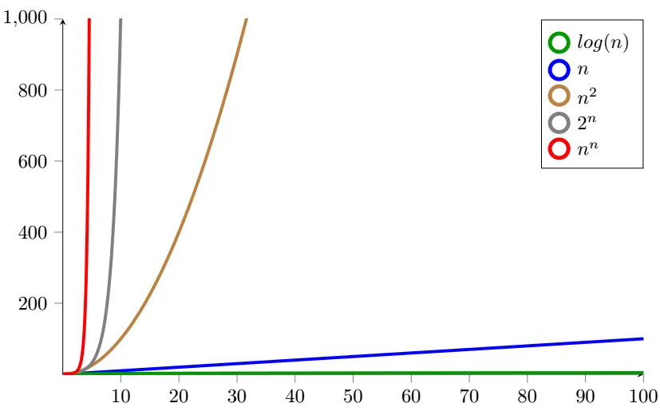

Data structures and algorithms are fundamental tools for writing efficient software. They determine how a program organizes information and how much work it performs; implementation choices, I/O, and hardware also affect performance.
Software often becomes slow because its approach performs too much work as the input grows. Choosing a suitable data structure and algorithm can reduce that work and make the solution easier to reason about.
A data structure organizes and stores data in a way that allows efficient access, modification, and processing. The choice of the appropriate data structure depends on the specific use case and can significantly impact the performance of an application. Here are some common data structures:
Each data structure supports a particular set of operations and ordering rules. Arrays offer constant-time indexing, stacks enforce last-in-first-out access, and trees represent hierarchy. Match those operations to the problem before choosing an implementation.
Imagine an array as a row of lockers, each labeled with a number and capable of holding one item of the same type. Technically, arrays are blocks of memory storing elements sequentially, allowing quick access using an index. A fixed-size array cannot grow after allocation. Dynamic arrays, such as Python lists and C++ vectors, grow by allocating a larger buffer and moving or copying elements when their capacity is exhausted.
A “do” with arrays: use them when you need quick random access by index, or when you’re scanning data in order. A “don’t”: assume insertions and deletions in the middle are cheap, shifting elements can turn a clean-looking solution into a slow one when the array is large.
Indices: 0 1 2 3
Array: [A] [B] [C] [D]Think of a stack like stacking plates: you always add new plates on top (push), and remove them from the top as well (pop). This structure follows the Last-In, First-Out (LIFO) approach, meaning the most recently added item is removed first. Stacks are particularly helpful in managing function calls (like in the call stack of a program) or enabling "undo" operations in applications.
Stacks shine when your problem has a “most recent context” feel: undo/redo, parsing, backtracking, evaluating expressions, matching parentheses. Lean on the LIFO rule to avoid complicated bookkeeping. Do not use a stack when you actually need “oldest first”, that’s a queue.
Top
┌───┐
│ C │ ← most recent (pop/push here)
├───┤
│ B │
├───┤
│ A │
└───┘
BottomA queue is similar to a line at the grocery store checkout. People join at the end (enqueue) and leave from the front (dequeue), adhering to the First-In, First-Out (FIFO) principle. This ensures the first person (or item) that arrives is also the first to leave. Queues work great for handling tasks or events in the exact order they occur, like scheduling print jobs or processing messages.
Queues are your go-to when fairness and order matter: job scheduling, buffering, breadth-first search, producer/consumer pipelines. A solid “do” is to use a queue when the problem sounds like “process things in the order they arrived.” A common “don’t” is implementing a queue with an array in a way that forces shifting on every dequeue, use a deque or circular buffer instead.
Front → [A] → [B] → [C] → [D] ← Rear
(dequeue) (enqueue)You can picture a linked list as a treasure hunt, where each clue leads you to the next one. Each clue, or node, holds data and a pointer directing you to the next node. Because nodes can be added or removed without shifting other elements around, linked lists offer dynamic and flexible management of data at any position.
Linked lists are great when you need frequent insertions or deletions once you already have the node, but they’re not great at random access. Use them when you’re walking forward and rewiring pointers. Do not treat them like arrays, finding “the 10,000th element” is slow because you have to traverse there step by step.
Head -> [A] -> [B] -> [C] -> NULLA tree resembles a family tree, starting from one ancestor (the root) and branching out into multiple descendants (nodes), each of which can have their own children. Formally, trees are hierarchical structures organized across various levels. They’re excellent for showing hierarchical relationships, such as organizing files on your computer or visualizing company structures.
Trees matter because many real problems are hierarchical even when they don’t look like it at first: file systems, DOM structures, organization charts, decision processes, indexes. Use tree traversals (pre/in/post/level-order) so your logic stays systematic. Do not forget that tree shape affects performance, an unbalanced tree can quietly turn fast operations into slow ones.
# Tree
(Root)
/ \
(L) (R)
/ \ \
(LL) (LR) (RR)Consider a graph like a network of cities connected by roads. Each city represents a node, and the roads connecting them are edges, which can either be one-way (directed) or two-way (undirected). Graphs effectively illustrate complex relationships and networks, such as social media connections, website link structures, or even mapping transportation routes.
Graphs are the “everything is connected” structure. The moment you see relationships that aren’t strictly hierarchical, friends, links, routes, dependencies, you’re in graph territory. Ask early: is this graph directed or undirected, weighted or unweighted? That choice decides whether BFS, DFS, Dijkstra, or something else is the right move. Do not ignore direction or weights and then wonder why the result feels wrong.
(A) ↔ (B)
| \
(C) ---> (D)(↔ undirected edge, ---> directed edge)

An algorithm is like a clear and detailed set of instructions or steps for solving a specific problem or performing a particular task. Think of it like following a precise recipe when cooking:
An algorithm defines its steps precisely enough to reason about correctness. A deterministic algorithm produces the same output for the same input. A randomized algorithm also uses random choices, so its execution or output can vary; its correctness and performance guarantees must account for that randomness.
To evaluate how good an algorithm is, we often look at its efficiency in terms of time complexity (how long it takes to run) and space complexity (how much memory it uses). We will discuss it in greater detail in later sections.
A quick “do and don’t” here: do focus on clarity first, an algorithm you can’t explain is hard to trust. Don’t confuse a clever trick with an algorithmic improvement; sometimes the biggest win is choosing a better approach, not writing tighter code.
An algorithm is a high-level blueprint for solving a specific problem. It is abstract, language-independent, and specifies a clear sequence of steps without relying on any particular programming syntax. An algorithm can be thought of as a recipe or method for solving a problem and can be represented in multiple forms, such as plain text or a flowchart.
Before implementing an algorithm, check whether it terminates, covers edge cases, and has acceptable time and space costs. This separates questions about the method from mistakes in its implementation.
Example: Algorithm for adding two numbers:
Step 1: Start
Step 2: Declare variables num1, num2, and sum.
Step 3: Read values into num1 and num2.
Step 4: Add num1 and num2; store the result in sum.
Step 5: Print sum.
Step 6: Stop.This algorithm can also be visualized using a flowchart:
---------------------
| Start |
---------------------
|
V
------------------------------
| Declare num1, num2, sum |
------------------------------
|
V
--------------------------
| Read num1 and num2 |
--------------------------
|
V
--------------------------
| sum = num1 + num2 |
--------------------------
|
V
--------------------------
| Print sum |
--------------------------
|
V
--------------------------
| Stop |
--------------------------In contrast, a program is a concrete implementation of an algorithm. It is language-dependent and adheres to the specific syntax and rules of a programming language. For example, the above algorithm can be implemented in Python as:
num1 = int(input("Enter first number: "))
num2 = int(input("Enter second number: "))
sum = num1 + num2
print("The sum is", sum)Programs may sometimes run indefinitely or until an external action stops them. For instance, an operating system is a program designed to run continuously until explicitly terminated.
Keep the algorithm recognizable in the program through clear names, explicit steps, and invariants. This makes it easier to locate mistakes and measure the effect of an optimization.
Algorithms can be classified into various types based on the problems they solve and the strategies they use. Here are some common categories with consistent explanations and examples:
This classification helps because it turns “a million problems” into “a few families.” When you recognize the family, you can reuse known techniques instead of reinventing solutions. Build pattern recognition. Do not memorize implementations without understanding what problem shape they fit.
I. Sorting Algorithms arrange data in a specific order, such as ascending or descending. Examples include bubble sort, insertion sort, selection sort, and merge sort.
Sorting is often the sneaky first step that makes everything else easier: once data is ordered, you can use binary search, two pointers, sweeping scans, and duplicate skipping. Ask: am I allowed to reorder the data? Do not sort blindly when order matters or when a hash-based approach would be cheaper.
Example: Bubble Sort
Initial Array: [5, 3, 8, 4, 2]
Steps:
After 1st Pass: [3, 5, 4, 2, 8]
After 2nd Pass: [3, 4, 2, 5, 8]
After 3rd Pass: [3, 2, 4, 5, 8]
After 4th Pass: [2, 3, 4, 5, 8] (Sorted)II. Search Algorithms are designed to find a specific item or value within a collection of data. Examples include linear search, binary search, and depth-first search.
Searching is about trade-offs: linear search is simple and often fine for small inputs; binary search is fast but needs sorted data; DFS/BFS are “search” across relationships rather than lists. Match the search method to the structure. Do not use binary search without guaranteeing sortedness.
Example: Binary Search
Searching 33 in Sorted Array: [1, 3, 5, 7, 9, 11, 33, 45, 77, 89]
Steps:
Mid element at start: 9
33 > 9, so discard left half
New mid element: 45
33 < 45, so discard right half
New mid element: 11
33 > 11, so discard left half
The remaining element is 33, which is the target.III. Graph Algorithms address problems related to graphs, such as finding the shortest path between nodes or determining if a graph is connected. Examples include Dijkstra's algorithm and the Floyd-Warshall algorithm.
Graph algorithms matter because graphs model real systems: routes, networks, dependencies, recommendations. Pin down the graph type first (directed? Weighted? Cyclic?). Do not treat all shortest paths the same, unweighted shortest path is BFS, but weighted shortest path often needs Dijkstra (or Bellman-Ford if negative edges exist).
Example: Dijkstra's Algorithm
Given a graph with non-negative edge weights, find the shortest distances from a starting node to all reachable nodes. Dijkstra’s algorithm relies on non-negative weights to finalize distances safely.
Steps:
Example Graph:
A -> B (1)
A -> C (4)
B -> C (2)
B -> D (5)
C -> D (1)Trace Table:
| Iter | Extracted Node (u) | PQ before extraction | dist[A,B,C,D] | prev[A,B,C,D] | Visited | Comments / Updates |
|---|---|---|---|---|---|---|
| 0 | : (initial) | (0, A) | [0, ∞, ∞, ∞] | [-, -, -, -] | {} | Initialization: A=0, others ∞ |
| 1 | A (0) | (0, A) | [0, 1, 4, ∞] | [-, A, A, -] | {A} | Relax A→B (1), A→C (4); push (1,B), (4,C) |
| 2 | B (1) | (1, B), (4, C) | [0, 1, 3, 6] | [-, A, B, B] | {A, B} | Relax B→C: alt=3 <4 ⇒ update C; B→D: dist[D]=6; push (3,C), (6,D). (4,C) becomes stale |
| 3 | C (3) | (3, C), (4, C) stale, (6, D) | [0, 1, 3, 4] | [-, A, B, C] | {A, B, C} | Relax C→D: alt=4 <6 ⇒ update D; push (4,D). (6,D) becomes stale |
| 4 | D (4) | (4, D), (4, C) stale, (6, D) stale | [0, 1, 3, 4] | [-, A, B, C] | {A,B,C,D} | No outgoing improvements; done |
Legend:
dist[X]: current best known distance from A to Xprev[X]: predecessor of X on that best pathStarting from A:
IV. String Algorithms deal with problems related to strings, such as finding patterns or matching sequences. Examples include the Knuth-Morris-Pratt (KMP) algorithm and the Boyer-Moore algorithm.
String algorithms are common because text is everywhere: search bars, logs, DNA sequences, code, messages. Watch for repeated work, naive substring checks can be painfully slow. Do not reach for regex as a hammer for every nail; it’s powerful, but certain patterns can be unexpectedly expensive.
Example: Boyer-Moore Algorithm
Text: "ABABDABACDABABCABAB"
Pattern: "ABABCABAB"Steps:
| Iter | Start | Text window | Mismatch (pattern vs text) | Shift applied | Next Start | Result |
|---|---|---|---|---|---|---|
| 1 | 0 | ABABDABAC |
pattern[8]=B vs text[8]=C | bad char C → last in pattern at idx4 ⇒ 8−4 = 4 | 4 | no match |
| 2 | 4 | DABACDABA |
pattern[8]=B vs text[12]=A | bad char A → last at idx7 ⇒ 8−7 = 1 | 5 | no match |
| 3 | 5 | ABACDABAB |
pattern[4]=C vs text[9]=D | D not in pattern ⇒ 4−(−1)= 5 | 10 | no match |
| 4 | 10 | ABABCABAB |
full right-to-left comparison → match | : | : | found at 10 |
Pattern matched starting at index 10 in the text.
This is the part many people miss: in real work, you’re rarely rewarded for reimplementing Dijkstra from memory. You’re rewarded for knowing that shortest paths is the right framing, picking the right variant, estimating cost, and using a reliable implementation. Become fluent in selection and trade-offs. Do not confuse “I can code it from scratch” with “I can solve the real problem.”
Illustrative scenario:
When Zara landed her first job at a logistics-tech startup, her assignment was to route delivery vans through a sprawling city in under a second, something she’d never tackled before. She remembered the semester she’d wrestled with graph theory and Dijkstra’s algorithm purely for practice, so instead of hand-coding the logic she opened the company’s Python stack and pulled in NetworkX, benchmarking its built-in shortest-path routines against the map’s size and the firm’s latency budget. The initial results were sluggish, so she compared A* with Dijkstra, toggling heuristics until the run time dipped below 500 ms, well under the one-second target. Her teammates were impressed not because she reinvented an algorithm, but because she knew which one to choose, how to reason about its complexity, and where to find a rock-solid library implementation. Later, in a sprint retrospective, Zara admitted that mastering algorithms in college hadn’t been about memorizing code, it had trained her to dissect problems, weigh trade-offs, and plug in the right tool when every millisecond and memory block counted.
This example concerns shortest routes between individual locations. Choosing the order of many deliveries is a separate routing problem. Any A* heuristic used to preserve shortest-path guarantees must satisfy the conditions explained in the graph notes.
Algorithmic complexity helps us understand the computational resources (time or space) an algorithm needs as the input size increases. Here’s a breakdown of different types of complexity:
Complexity is the “budgeting” system for software. You don’t need exact microseconds to make good decisions, you need to know how costs grow when data grows. Think: if input doubles, what happens? Do not be fooled by small tests; many algorithms look fine on tiny inputs and collapse at scale.
Understanding how the running time or space complexity of an algorithm scales with increasing input size is pivotal in algorithm analysis. To describe this rate of growth, we employ several mathematical notations that offer insights into the algorithm's efficiency under different conditions.
These notations are less about fancy math and more about communicating clearly. When someone says “this is $O(n \log n)$,” they’re telling you how it behaves as you scale, and whether it’s likely to stay usable when today’s dataset becomes tomorrow’s dataset.
Big O notation gives an asymptotic upper bound on a function. It does not mean “worst case”: best-case, average-case, and worst-case running times are separate functions, and each can have an upper bound.
For non-negative functions, $f(n) = O(g(n))$ means there are constants $c > 0$ and $n_0$ such that $f(n) \le c g(n)$ for every $n \ge n_0$. Constant factors and a finite number of small inputs do not affect this bound.
For instance, if an algorithm has a time complexity of $O(n)$, it signifies that the algorithm's running time does not grow more rapidly than a linear function of the input size, in the worst-case scenario.

Big Omega notation provides an asymptotic lower bound. It applies to whichever function is being analyzed, including a worst-case running-time function; it does not mean “best case”.
For non-negative functions, $f(n) = \Omega(g(n))$ means there are constants $c > 0$ and $n_0$ such that $f(n) \ge c g(n)$ for every $n \ge n_0$.
For example, finding the maximum of an arbitrary unsorted array requires examining every element. Its running time is $\Omega(n)$ even on its best inputs in the usual comparison model.

Theta notation gives an asymptotically tight bound: both an upper bound and a lower bound of the same order. It does not mean “average case”.
Stating $f(n) = \Theta(g(n))$ means that, for sufficiently large $n$, positive constants $c_1$ and $c_2$ satisfy $c_1g(n) \le f(n) \le c_2g(n)$. For example, $3n^2 + 2n + 1 = \Theta(n^2)$; the bound need not be linear.

These notations primarily address the growth rate as the input size becomes significantly large. While they offer a high-level comprehension of an algorithm's performance, the actual running time in practice can differ based on various factors, such as the specific input data, the hardware or environment where the algorithm is operating, and the precise way the algorithm is implemented in the code.
Big O notation is a practical tool for comparing growth bounds. The examples below use worst-case time unless an average or expected bound is stated. Here are examples of various complexities:
Use these growth rates to explain the work an algorithm performs. Nested loops may be quadratic, but their actual iteration bounds matter; repeated halving usually introduces a logarithm. Derive the bound from the work rather than from the visual shape of the code.
When explicitly outputting all permutations or subsets, include the cost of writing every element of every result. Counting candidates alone can omit a factor of $n$.
The graph below illustrates the growth of these different time complexities:

Imagine you’re building an app and every millisecond counts, choosing the right algorithm can make it lightning-fast or tediously slow, so having a solid grasp of time complexity may pay off.
Here is a summary cheat sheet:
| Notation | Name | Meaning | Common Examples |
|---|---|---|---|
| $O(1)$ | Constant time | Running time does not depend on input size $n$. | Array indexing, expected hash-table lookup |
| $O(\log n)$ | Logarithmic time | Time grows proportionally to the logarithm of $n$. | Binary search, operations on balanced BSTs |
| $O(n)$ | Linear time | Time grows linearly with $n$. | Single loop over array, scanning for max/min |
| $O(n \log n)$ | Linearithmic time | Combination of linear and logarithmic growth. | Merge sort, heap sort, FFT |
| $O(n^2)$ | Quadratic time | Time grows proportional to the square of $n$. | Bubble sort, selection sort, nested loops |
| $O(n^3)$ | Cubic time | Time grows proportional to the cube of $n$. | Naïve matrix multiplication (3 nested loops) |
| $O(2^n)$ | Exponential time | Time doubles with each additional element in the input. | Recursive Fibonacci, brute‐force subset enumeration |
| $O(n!)$ | Factorial time | Time grows factorially with $n$. | Permutation search leaves, TSP candidate tours |
The main “do” here is to treat Big O as a communication tool. It lets you compare approaches and explain choices to others. Do not weaponize it, “this is $O(n)$” doesn’t automatically beat “this is $O(n \log n)$” if constants, data sizes, or real constraints tell a different story.
Some tasks cannot be reduced to constant time because they inherently require examining the input or producing many outputs. Identify the applicable lower bound before trying to optimize beyond it.
The number of iterations often depends on how quickly the remaining work shrinks. The following patterns distinguish linear, logarithmic, and combined growth.
This is one of the most useful instincts you can build: look at the loop, ask what variable is changing, and ask whether it’s shrinking by subtraction (linear) or division (logarithmic). If you can do that, you can “feel” complexity without formal proofs.
| Pattern | Typical loop behaviour | Resulting time-complexity |
|---|---|---|
| Halve (or otherwise divide) the problem each step | $n \to n/2 \to n/4 \dots$ | $\Theta(\log n)$ |
| Do a linear amount of work, but each unit of work is itself logarithmic | outer loop counts down one by one, inner loop halves | $\Theta(n \log n)$ |
Assume non-negative integer inputs and constant-time loop bodies. The logarithmic formulas apply for $n \ge 1$; at $n = 0$, these loops perform no iterations.
Below are four miniature algorithms written in language-neutral pseudocode (no Python syntax), followed by the intuition behind each bound.
I. Linear - $\Theta(n)$
procedure Linear(n)
while n > 0 do
n ← n − 1
end while
end procedureWork left drops by 1 each pass, so the loop executes exactly $n$ times.
II. Logarithmic - $\Theta(\log n)$
procedure Logarithmic(n)
while n > 0 do
n ← ⌊n / 2⌋ ▹ halve the problem
end while
end procedureEach pass discards half of the remaining input, so only $\lfloor\log_2 n\rfloor + 1$ iterations are needed.
Common real examples: binary search, finding the height of a complete binary tree.
III. Linear-logarithmic - $\Theta(n \log n)$
procedure LinearLogarithmic(n)
m ← n
while m > 0 do ▹ runs n times
k ← n
while k > 0 do ▹ runs log n times
k ← ⌊k / 2⌋
end while
m ← m − 1
end while
end procedureClassic real-world instances: mergesort, heapsort, many divide-and-conquer algorithms, building a heap then doing $n$ delete-min operations.
IV. Squared-logarithmic - $\Theta(\log^2 n)$
procedure LogSquared(n)
m ← n
while m > 0 do ▹ outer loop: log n times
k ← n
while k > 0 do ▹ inner loop: log n times
k ← ⌊k / 2⌋
end while
m ← ⌊m / 2⌋
end while
end procedureBoth loops cut their control variable in half, so each contributes a $\log n$ factor, giving $\log^2 n$. Such bounds appear in some advanced data-structures (e.g., range trees) where two independent logarithmic dimensions are traversed.
Rules of thumb:
while x > 1: x \gets x / c (for constant $c > 1$) takes $\Theta(\log x)$ steps.A “do” for interviews and real design reviews: walk through this reasoning out loud. It shows you understand growth, not just symbols. A “don’t” is to overfit to the notation, always tie the bound back to the loop behavior.
These misconceptions are worth calling out because they keep people from learning the useful parts. The goal isn’t to become a theoretician; it’s to become someone who can write software that keeps working as the world scales. That’s why a little complexity intuition pays off so heavily.